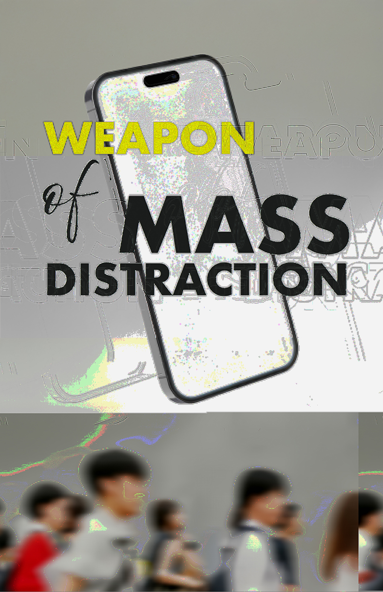
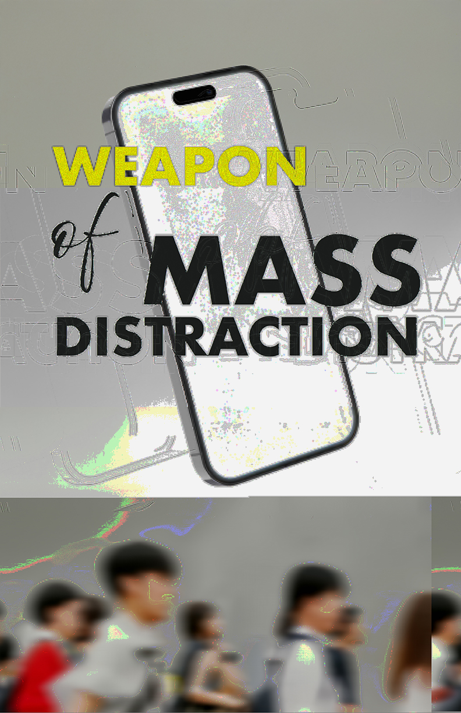

Weapon of Mass Distraction
Spring 2025
Poster Series, Glitch Art


 


Concept
"Weapon of Mass Distraction" explores our paradoxical relationship with smartphone technology through a series of glitch art posters. The text works as both title and commentary on how devices made for connection now break apart our attention and get in the way of real human contact. Crowds shown as silhouettes at the bottom of each poster were AI-generated and added to show how disconnected we've become in social spaces. These figures represent the strange isolation that happens in crowded places where people are physically together but mentally lost in their digital worlds.
Process
The project began with clean iPhone mockups, which were then corrupted using databending techniques. Image files were opened in Audacity and manipulated as audio data, while a text editor altered the raw image structure. This created unpredictable digital glitches that visually represent technological disruption. After corrupting the files, Photoshop was used to refine the distortions and create different color variations, each balancing chaos with intentional design.
Visual Approach
The glitch aesthetic works as a visual metaphor for fractured attention in the digital age. The corruption techniques mirror how technology both connects and disconnects us simultaneously. Each color version explores a different emotional tone. By intentionally degrading the pristine smartphone image, the work challenges assumptions about technology as purely beneficial.